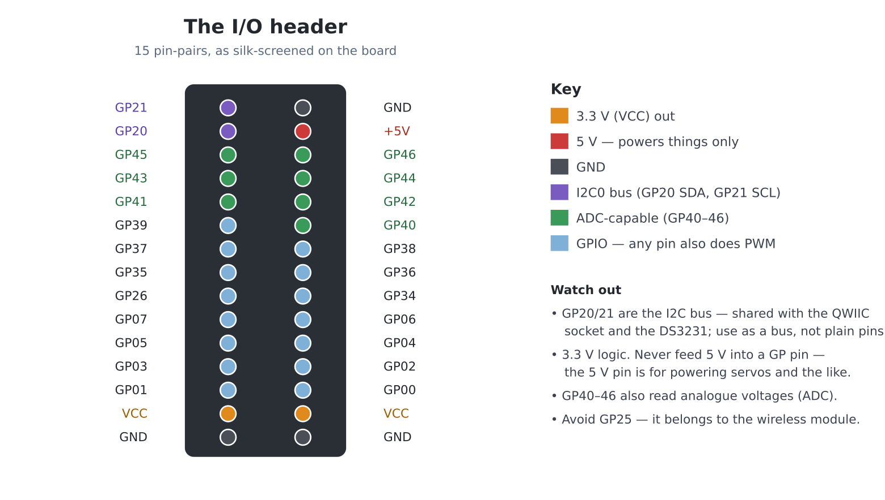
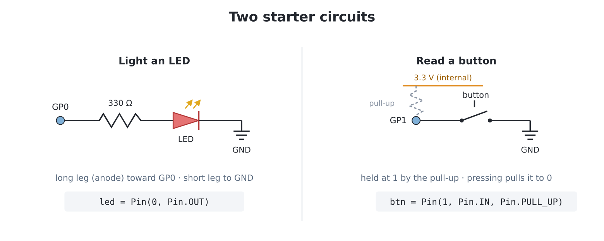
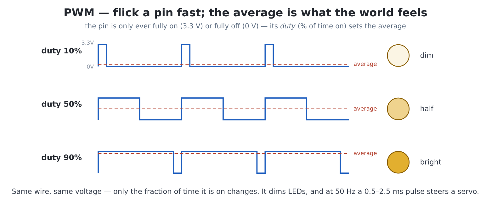

Everything so far happened behind glass. This chapter reaches through it: the I/O header and the QWIIC socket are the machine’s hands, and with a breadboard and a fistful of parts your programs start moving electrons in the room — lights, buttons, knobs, servos, sensors. Part V closes where computing gets physical.
The shopping list (a “starter electronics kit” contains most of it): a breadboard, jumper wires (male-female for the header), a few LEDs, 330 Ω resistors, a couple of push buttons, a 10 kΩ potentiometer, a thermistor (a resistor whose value changes with temperature), and — for the grand finale — a small hobby servo. Total cost: a pizza. A couple of the later experiments also use a plug-in QWIIC light sensor such as the TSL2591; the I2C section below introduces it.
The safety card, read twice, taped to the desk:
Fifteen pin-pairs, exactly as silk-screened beside the header (the board photo in chapter 1 shows it):
GP21 GND <- I2C0 SCL (shared: QWIIC socket + DS3231)
GP20 +5V <- I2C0 SDA (shared, 10K pull-ups on board)
GP45 GP46 \
GP43 GP44 | GP40-GP46: also ANALOGUE inputs (machine.ADC)
GP41 GP42 |
GP39 GP40 /
GP37 GP38
GP35 GP36
GP26 GP34
GP07 GP06
GP05 GP04
GP03 GP02
GP01 GP00
VCC VCC <- 3.3 V out
GND GNDEvery GP pin here is yours for Pin, and any of them can
do PWM. The special talents: GP40–GP46 are this chip’s
analogue-capable pins (machine.ADC);
GP20/GP21 are the I2C bus — shared with the QWIIC
socket and the on-board DS3231, so treat them as the I2C bus
they are, never as plain pins. (GP32 and GP27 carry the DS3231’s alarm
and 32 kHz outputs — chapter 29 met the first.) The manual’s section 2
lists the machine’s own reserved pins; the header simply never exposes
them.
On a Colour Maximite 2 the same GP numbers work, on its rear connector: GP0 is pin 8, GP1 pin 10, GP2 pin 12, the knob’s GP40 is pin 26, and GP20/GP21 are pins 21 and 33 (pins 3 and 5 on a board with the Wi-Fi module).
Pin("LED")is its SD card light. Appendix K has the whole table.

Wire an LED: GP0 → resistor → LED long leg, LED short leg →
GND. Then edit("blink2.py"):
import time
led = Pin(0, Pin.OUT)
for _ in range(20):
led.toggle()
time.sleep(0.25)
led.off()Chapter 2’s blink, except you built the light.
Pin(n, Pin.OUT) claims a pin as an output;
.on(), .off(), .toggle(), or
.value(1) command it. That’s the entire API for everything
that switches: LEDs today, relays, transistors and motor drivers the day
you need them.
Wire a button between GP1 and GND. Then
edit("pressme.py"):
import time
button = Pin(1, Pin.IN, Pin.PULL_UP)
print("press the button (Ctrl-C to stop)")
was = 1
while True:
now = button.value()
# just pressed (ch 25, in copper)
if now == 0 and was == 1:
beep()
print("click!")
was = now
time.sleep_ms(5)Two things demand understanding.
PULL_UP: an unconnected input pin is
floating — it reads whatever nearby electric fields whisper
(experiment 1 makes this spooky truth visible). The pull-up is a weak
internal resistor holding the pin at 1 until the button pulls
it to GND — so pressed reads 0, idle reads 1, and
nothing ever floats. It’s counter-intuitive for a day and second nature
forever. And the now/was pair is chapter 25’s
just-pressed pattern, now debouncing real springy metal — the 5 ms nap
conveniently outlasts most contact rattle.

Coming from MMBasic:
SETPIN n, DOUT/DIN/AIN/PWMmap toPin(n, Pin.OUT),Pin(n, Pin.IN, ...),machine.ADC,machine.PWM— and the pull-up option you always added on DIN is thePin.PULL_UPargument.
Digital pins know two words; the ADC hears the whole range. Wire the
potentiometer: outer legs to 3.3V (VCC) and
GND, wiper to GP40.
edit("knob.py"):
import time
import machine
knob = machine.ADC(Pin(40))
for _ in range(200):
raw = knob.read_u16() # 0 .. 65535
percent = raw * 100 // 65535
print(f"\r{'#' * (percent // 5):20} {percent:3}%", end="")
time.sleep_ms(50)
print()read_u16() returns 0–65535 across 0–3.3 V; everything
else is scaling. Turn the knob and watch the bar chase your fingers —
that’s a voltage divider you built (the wiper taps a fraction
of 3.3 V), and the same trick reads any resistive sensor: swap the pot
for a thermistor and a 10 kΩ fixed resistor in series
(3.3V → thermistor → GP40 → resistor → GND) and the bar now tracks
temperature — pinch the thermistor and watch it climb with your body
heat. One circuit, a thousand sensors.
A pin that flicks on and off thousands of times a second averages to something in between — that’s PWM, and it dims LEDs and, more gloriously, commands servos.

Wire the servo: brown→GND, red→5V, orange
(signal)→GP2. edit("sweep.py"):
import time
import machine
servo = machine.PWM(Pin(2), freq=50) # servos want 50 Hz
def angle(deg):
# 0 deg = 0.5 ms pulse, 180 deg = 2.5 ms, out of a 20 ms frame
us = 500 + deg * 2000 // 180
servo.duty_u16(us * 65535 // 20000)
for _ in range(3):
for a in range(0, 181, 5):
angle(a)
time.sleep_ms(20)
for a in range(180, -1, -5):
angle(a)
time.sleep_ms(20)
# release (stops the hold jitter)
servo.duty_u16(0)A thing in the room moves because your for loop
said so — for most people the single most startling moment in this book.
The angle() maths is the servo convention (a 0.5–2.5 ms
pulse every 20 ms encodes the angle); duty_u16 sets the
pulse as a fraction of 65535. For LED dimming, same API:
machine.PWM(Pin(0), freq=1000) and
duty_u16(anything) — wire experiment 3’s night-light and
see.
Beyond home-made circuits lies an industry of plug-together
modules — SparkFun Qwiic, Adafruit STEMMA QT, Pimoroni Qw/ST:
hundreds of sensors and gadgets on one four-wire standard, and this
board’s QWIIC socket speaks it with no soldering at all. They all ride
the I2C bus (GP20/21), where every device has an
address. Meet the bus — edit("roll_call.py"):
import machine
i2c = machine.I2C(0, sda=Pin(20), scl=Pin(21), freq=400000)
found = i2c.scan()
print("devices answering:", [hex(a) for a in found])Run it bare and one voice answers: 0x68 — the DS3231,
this book’s oldest resident, revealed as just another I2C citizen. Plug
a QWIIC module into the socket, run again, and its address joins the
roll call: plug in the TSL2591 ambient-light sensor,
for instance, and 0x29 appears. From there, each module has
a MicroPython driver — usually one mip.install(...) away
(the mip package tool came aboard in chapter 30) or a short
datasheet read; the pattern is always
readfrom_mem/writeto_mem at its address,
exactly as ds3231.py does — and that file, now, is readable
to you as a worked example. For the TSL2591 its driver turns
the raw sensor into a plain lux reading (how bright the
room is, in real units) — the light experiments below build on it.
(The header also carries everything machine.UART and
machine.SPI need, for modules that speak those instead —
the MicroPython docs cover them in the manual’s section-16 spirit:
standard APIs, nothing board-specific.)
In 1976, Breakout shipped with a knob, not buttons — and
your chapter 23 Breakout deserves one, plus a proper arcade fire button.
Build the controller: the potentiometer’s wiper on GP40
(outer legs 3.3V/GND), a button from GP1 to GND. Then
the driver — edit("gpad.py"):
# gpad.py -- a knob-and-button game controller on the I/O header.
# import gpad
# x = gpad.dial(0, 559) # knob position, scaled to a range
# if gpad.fire(): ... # edge-detected button press
import machine
from machine import Pin
_knob = machine.ADC(Pin(40))
_button = Pin(1, Pin.IN, Pin.PULL_UP)
_fire_was = 1
def raw():
"""The knob, 0..65535 (noisy at the edges -- that's analogue
life)."""
return _knob.read_u16()
def dial(lo, hi):
"""The knob mapped onto lo..hi."""
return lo + raw() * (hi - lo) // 65535
def held():
"""Is the button down right now?"""
return _button.value() == 0
def fire():
"""True exactly once per press (the just-pressed pattern)."""
global _fire_was
now = _button.value()
pressed = now == 0 and _fire_was == 1
_fire_was = now
return pressed
if __name__ == "__main__":
import time
print("controller test -- turn and click (Ctrl-C stops)")
while True:
bar = dial(0, 20)
click = " CLICK!" if fire() else ""
print(f"\r{'#' * bar:20}{click} ", end="")
time.sleep_ms(20)Run its self-test, then perform the transplant on
breakout.py. Add import gpad at the top, and
replace the paddle’s input lines —
if held(keyboard.LEFT):
px -= 420 * dt
if held(keyboard.RIGHT):
px += 420 * dt
px = max(0, min(W - PW, px))— with one:
px = gpad.dial(0, W - PW)(and let SPACE or gpad.fire() start the game,
if you like the button). This is the fragment exception again, chapter
19 style — a patch to a program you own. Play it. Absolute
paddle position — the knob’s angle is the paddle’s
place, no speed limit, no travel time — is a control feel keyboards
cannot produce, and it is why the 1976 cabinet had a knob. Your hands
will report the difference inside ten seconds; a second player will
refuse to give the controller back.
Pin(3, Pin.IN) — no
pull-up, nothing wired — and print .value() in a loop while
you wave your hand near (not touching) the header. Spooky, and
exactly why PULL_UP exists. Now add the pull-up and watch
certainty return.tone() —
tone(gpad.dial(200, 2000)) in a loop, stop()
on the button. Chapter 20 meets copper; expect family members to appear
and demand a turn.gettime() driving
angle() — seconds sweep 0–180°. A clock with a
hand, in the physical sense.pcmath.PID in the flesh: an LED (PWM) pointing at the
TSL2591, and the controller holding the sensor at a setpoint
light level — cover the sensor with your hand and watch the LED fight
back within a frame. That’s a control loop, the idea inside thermostats,
drones and rockets, running on your desk.